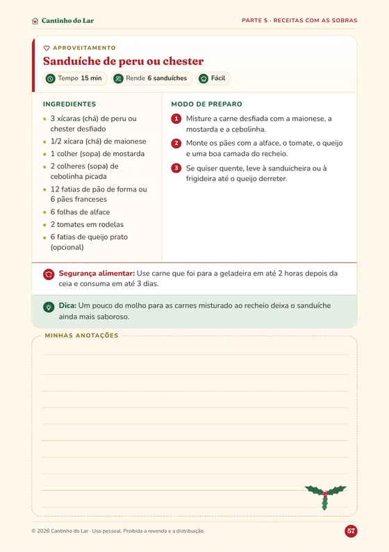

E no dia 25?
E as sobras?
Tem receita pra isso.
Bônus do guia
Sanduíche de peru ou chester
15 min
Risoto de aproveitamento
25 min
Torta salgada de sobras
55 min
Rabanada de panetone
25 min

+ como guardar e requentar com segurança
Ceia de Natal Sem Estresse · guia em PDF
R$ 19,90